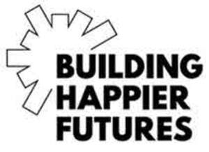

Trade Mark Journal No.2025/028 11 July 2025
UK00004211077 29 May 2025 (4,8,9,11,14,16,18,20,21,24,25,26,28,35,36,41)

- Class 4
- Candles; wicks for candles.
- Class 8
- Manicure sets; shaving cases.
- Class 9
- Mouse mats and mouse pads; mobile phone accessories; sunglasses and eyeglass cases; eyeglass chains and cords; floats for bathing and swimming.
- Class 11
- Apparatus for lighting.
- Class 14
- Jewellery; keyrings.
- Class 16
- Stationery; passport holders; photograph stands.
- Class 18
- Tote bags; leather and imitations of leather; travelling bags; umbrellas, parasols; handbags; rucksacks; purses; attaché cases; backpacks; bags (net -) for shopping; beach bags; card cases [notecases]; chain mesh purses, not of precious metal; clothing for pets; collars for animals; covers (umbrella -); covers for animals; dog collars; handbags; pets (clothing for -); pocket wallets; purses; purses, not of precious metal; rucksacks; satchels (school -); school bags; school satchels; shopping bags; umbrella covers; vanity cases, [not fitted]; wheeled shopping bags.
- Class 20
- Furniture; mirrors; picture frames; cushions; decorative mobiles; nesting boxes; stoppers for bottles; works of art, of wood, wax, plaster or plastic.
- Class 21
- Mugs; water bottles; glassware, porcelain and earthenware not included in other classes; Cosmetic utensils; tea cosies; gardening gloves; gloves (gardening -); non-electric appliances for removing make-up; watering cans.
- Class 24
- Bed and table covers; wall hangings.
- Class 25
- Socks; t-shirts; clothing; footwear; headgear; babies’ napkins of textile.
- Class 26
- Sewing boxes; fastenings for clothing; needle cushions and pin cushions; haberdashery; sewing thimbles.
- Class 28
- Games; party favours; decorations for Christmas trees.
- Class 35
- Business advisory, consultancy and information services provided to charities including such services provided by way of the Internet and web sites; business research and business marketing services conducted for charities; advertising, marketing and promotional services; advertising for others; career placement; internship placement services; job and personnel placement; personnel placement and recruitment; information, consultancy and advisory services relating to all the aforesaid services.
- Class 36
- Financial advisory, consultancy and information services provided to charities including such services provided by way of the Internet and web sites; investment, actuarial and pension services, trusteeship services provided for charities; charitable fundraising services; organisation of charitable collections; insurance services and financial services all relating to charities and to improving the well-being of local environment of communities; funds management; provision of funds; financing services for securing funds; financial grant services; information, consultancy and advisory services relating to all the aforesaid services.
- Class 41
- Education services; coaching services; vocational education services; education, coaching and vocation demonstrations; education, coaching and vocation seminars; education, coaching and vocation advice; education, coaching and vocation consultancy; education, coaching and vocation assistance; education, coaching and vocation information; education, coaching and vocation instruction; organising, providing, arranging and hosting of events, symposiums, conferences, congresses, conventions, seminars, courses, exhibitions, meetings, workshops, demonstrations, displays, lectures and performances for educational, inspirational, coaching, motivating, entertainment and cultural activities; organisation and arranging of competitions and award ceremonies; providing recognition and incentives by way of awards to demonstrate excellence; online publishing; providing non-downloadable publications, reports, newsletters, photographs, brochures, invitations, programmes, graphics, films, videos, webcasts and podcasts; information, consultancy and advisory services relating to all the aforesaid services.
John Lewis Plc
Representative: Lewis Silkin LLP